Префектура Нагано · Омати · напитки
Son of the Smith: яблочные фермеры из Нагано, которые варят хард-сайдер
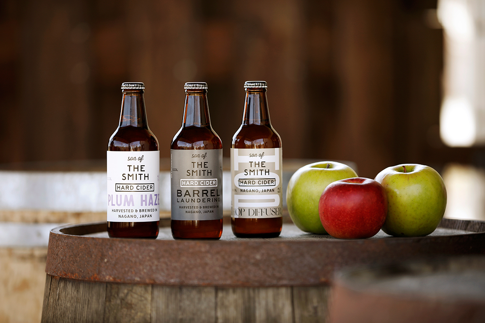
Son of the Smith это команда из яблочных фермеров, химика и дизайнера, которая делает хард-сайдер от сада до бутылки. Через этот напиток они думают о будущем японского сельского хозяйства.
Что это
Хард-сайдер, а не сидр
Хард-сайдером в Америке называют яблочное вино. В Англии его знают просто как сайдер, и когда-то налог на него помогал оплачивать освоение Американского континента. Примерно за 15 лет до 2023 года на западном побережье США начался бум крафтового сайдера, и именно эта культура вдохновила команду из префектуры Нагано.
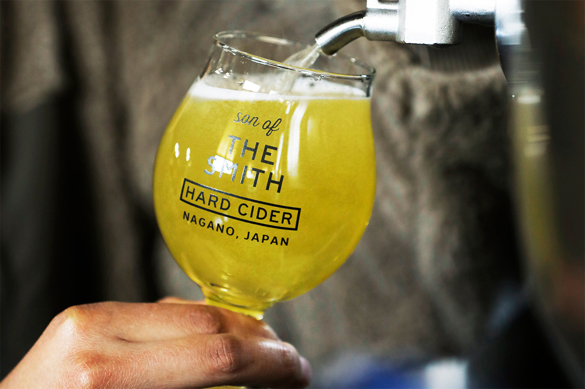
Яблочный алкоголь в Японии обычно связывают с французским сидром. Son of the Smith делает другое. Один их сайдер свежий, с фруктовым вкусом и приятной горчинкой хмеля, другой оставляет сложное долгое послевкусие, как красное вино. Даже базовый «original» каждый раз бродит по новой схеме: сок сидрового сорта «грэнни смит» сбраживают на дрожжах для сакэ и настаивают на зубровке, траве с ароматом, похожим на сакура-моти, рисовую сладость в листе сакуры.
Начало
Два сада и поездка в Портленд
Всё началось со встречи двух соучредителей. Нобумицу Миядзима унаследовал семейный яблоневый сад в городе Коморо, а Кота Одзава принял семейный сад в Омати, откуда видны Северные Альпы. Познакомились они в обществе плодоводов префектуры Нагано и сразу нашли общий язык.
У фермеров есть одна постоянная забота: что делать с яблоками нестандартного вида. Друзья решили учиться делать яблочное вино и собирались ехать во Францию, на родину сидра. Но их учитель, известный специалист по плодоводству, посоветовал другой адрес: Портленд в штате Орегон. Там вслед за крафтовым пивом расцвёл хард-сайдер небольших производителей.
В 2015 году двое фермеров съездили в Портленд, и эта культура их потрясла.
«Сидр мне казался напитком, который пьют чинно и аккуратно. А хард-сайдер гораздо проще, он просто часть повседневной жизни. И вкус там можно делать каким угодно, это меня восхитило»
Нобумицу Миядзима
Вернувшись домой, они стали устраивать в разных местах вечера с орегонским сайдером. На одном из них познакомились с Такуро Икэути, тогда аспирантом университета Синсю, который хорошо разбирался и в химии, и в алкоголе. Его позвали отвечать за брожение, и в 2017 году вышел первый сайдер. В 2019 году друзья основали компанию и построили в Омати свою сидродельню.
Сад
Сидровые яблоки, которых в Японии почти никто не растил
Параллельно команда начала растить яблоки специально для сайдера. Главное в сидровых сортах это высокое содержание танинов. У каждого сорта свои танины, и смесь нескольких сортов даёт сложный вкус, которого не добиться из столовых яблок.
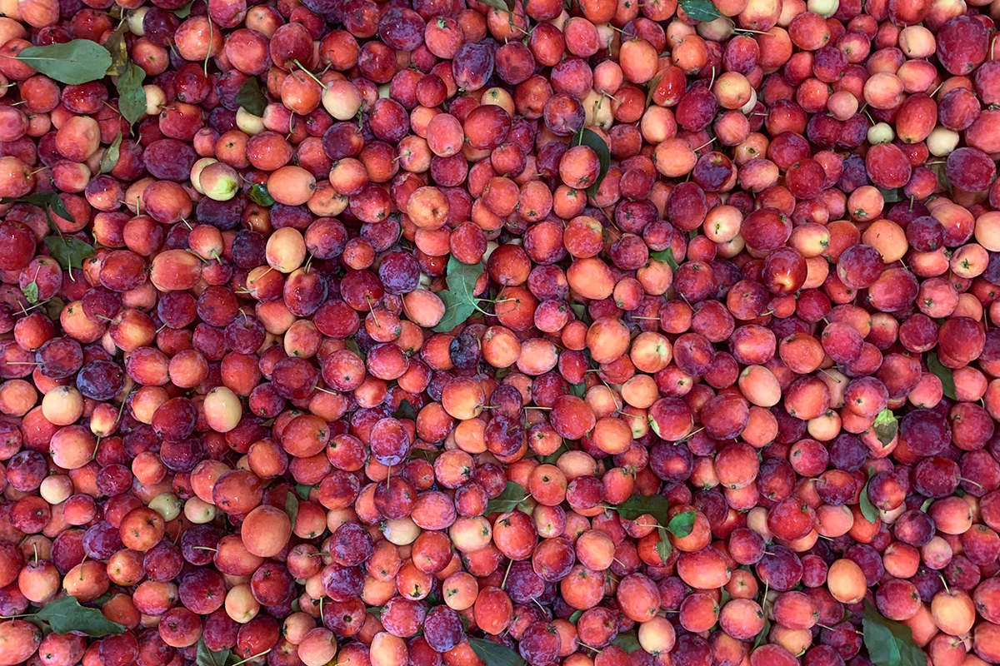
В Японии яблоки растят почти только для еды, и терпкие сидровые сорта, которые нельзя есть сырыми, здесь никто всерьёз не выращивал.
«Такого сочетания подвоя и саженца нет больше нигде в мире. Старые приёмы часто не работают, идём на ощупь»
Нобумицу Миядзима и Кота Одзава
Кота Одзава видит здесь параллель с виноградом. В Японии его тоже долго растили только для еды, но потом распространились винные сорта из-за границы, и японское вино стало большой маркой.
«Мы делаем то же самое, только с яблоками. Мы фермеры и хотим создавать вкус прямо в саду. И хотим передать эту культуру следующему поколению яблочных фермеров»
Кота Одзава
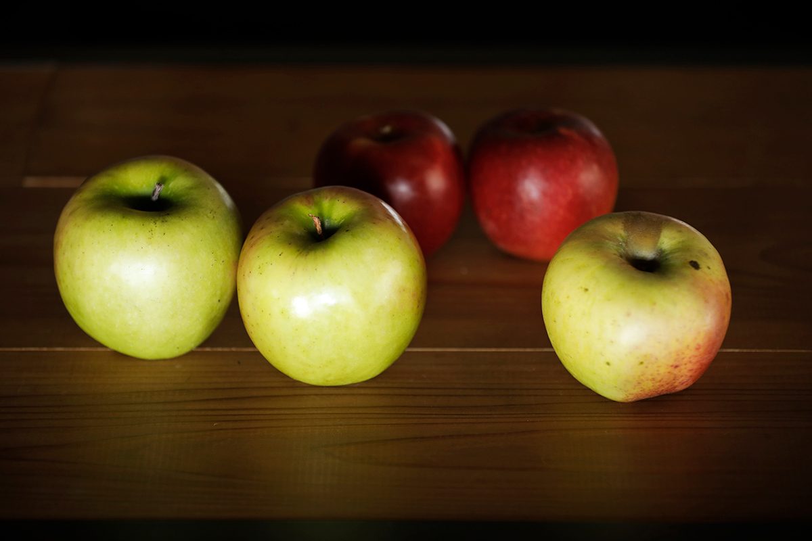
Японское яблоневодство началось в 1871 году, когда из-за границы привезли саженцы западных яблонь, и с тех пор ориентировалось на столовые сорта. Сад семьи Одзава основан в 1910 году, сад семьи Миядзима в 1927 году. Здесь выводили и свои сорта: например, «Асама кучина» вывели в саду Миядзимы, а растят здесь и «грэнни смит», и «ньютаун пиппин».
После поездки к истокам сайдера друзья в 2017 году всерьёз взялись за сидровые сорта. Они выращивают около десяти сортов, в основном английских, например «Портерс перфекшн». «Сидровые сорта в таком масштабе, наверное, впервые растят в Японии», говорит Кота Одзава.
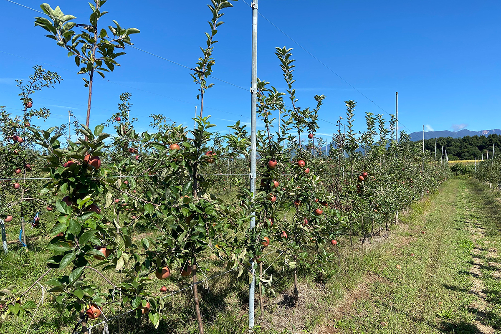
Сад устроен по южнотирольской системе плотной посадки, которая всё шире распространяется в Нагано. Компактные подвои и саженцы сажают тесно, и большой урожай получают уже примерно через три года. Солнце освещает дерево сверху донизу, поэтому яблоки вызревают ровно. Обрезка простая, приёмы легко передать другим, и это помогает при нехватке рабочих рук.
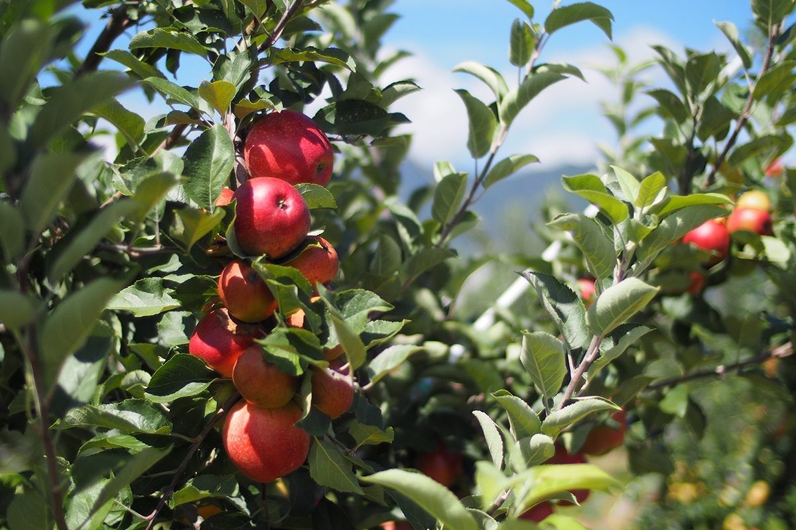
Команда
Фермеры, химик и дизайнер
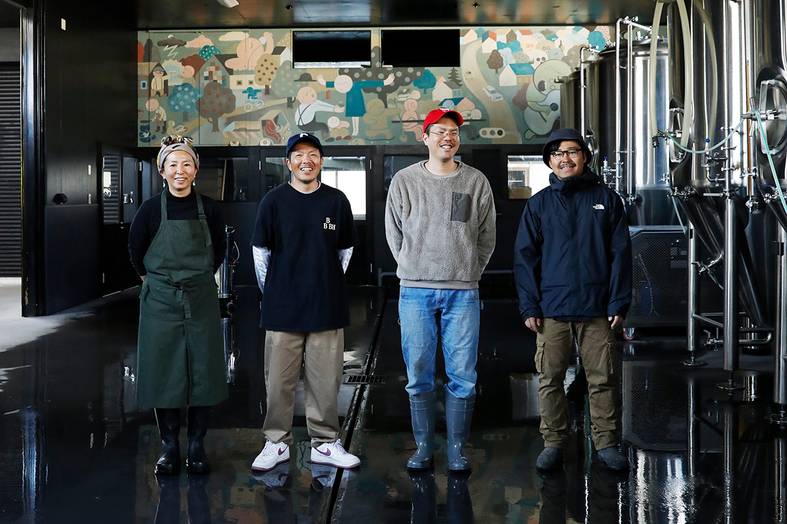
Если Миядзима и Одзава подходят к сайдеру со стороны сада, то Такуро Икэути, которого в команде зовут Хакасэ, «профессор», подходит со стороны химии. В аспирантуре он занимался органическим синтезом. Через новых друзей он попробовал орегонский сайдер и решил, что в Японии можно сделать то, чего ещё никто не делал. В 2017 году он учился в английской сидродельне Somerset Cider Brandy Company, в 2018 году изучал сидроделие в Университете штата Орегон.
Сайдеры с одним и тем же названием он каждый раз делает по новому рецепту.
«Концепцию я сохраняю, но яблоки каждый год разные, и я ищу брожение под них. Если появилась новая технология, не применить её в том же сезоне было бы ленью»
Такуро Икэути
Он разбирается и в пиве, и в вине и свободно берёт приёмы из разных областей. Его сайдеры высоко оценивают и за пределами Японии.
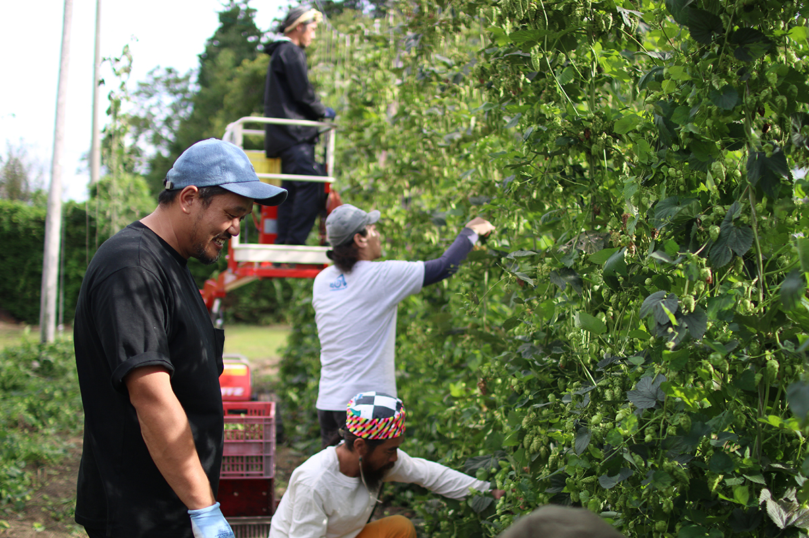
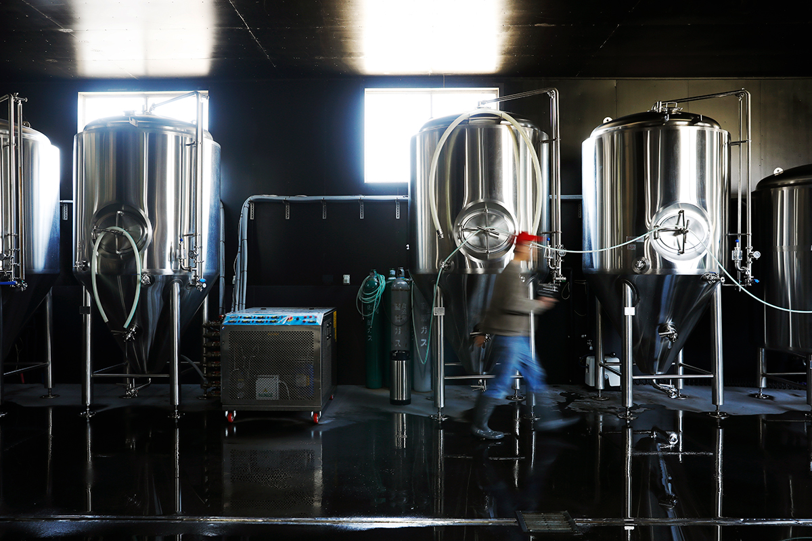
«Я не задаю рецепт жёстко, специально добавляю, например, дикие дрожжи. Хочу сделать то, что выйдет за пределы моего воображения»
Такуро Икэути
В 2021 году BARREL LAUNDERING получил серебро на International Cider Awards, конкурсе с историей больше 130 лет. В том же году Икэути сам был там в жюри, и этот опыт многое дал его работе.
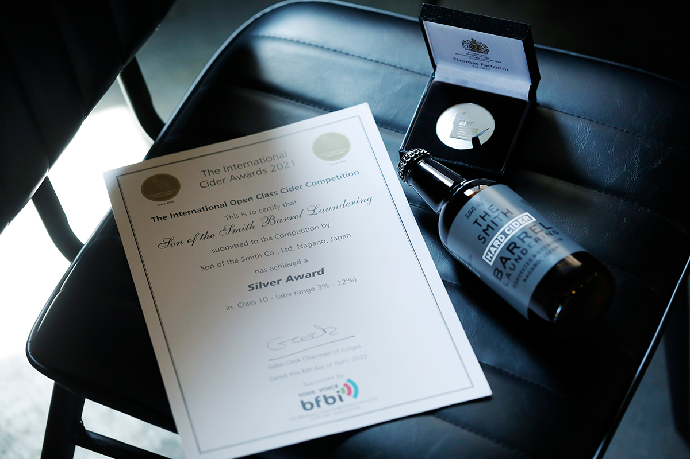
Брендом занимается дизайнер из студии BAUM, старый друг Одзавы. «Он придумывает дизайн и названия, учитывая и нашу фермерскую идею, и технологии, которые применил Хакасэ. Son of the Smith это команда, где каждый силён в своём», говорит Кота Одзава.
Будущее
Свой сорт для сайдера
Чтобы культура сайдера прижилась надолго, друзья пошли дальше: скрещивают английские сидровые сорта с японскими и выводят собственные.
«Если посадить семечко „Фудзи“, „Фудзи“ из него не вырастет. Сколько семечек, столько и сортов, яблоки это целая вселенная. Мы хотим своими руками найти в ней новые сидровые сорта и передать их следующему поколению вместе с любовью к яблокам. Было бы здорово, если бы их ценили для сайдера и тогда, когда нас уже не будет»
Кота Одзава
Возможно, когда-нибудь появится и сидровый сорт яблок под названием Son of the Smith. По словам Одзавы, селекцией активно занималось поколение их отцов, и в обоих семейных садах есть свои сорта. Хмель они тоже выводят: скрещивают западные сорта с японским диким хмелем.
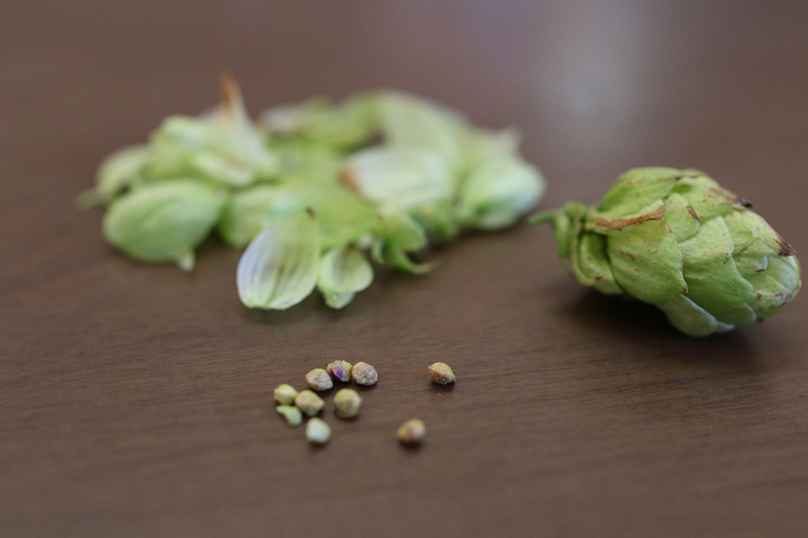
Вокруг сада во весь горизонт поднимаются Северные Альпы, но смотрят фермеры дальше.
«Фермеры привязаны к земле. Работают вместе внутри одной округи, а за её пределы почти не выходят. Но чтобы сделать новое, нужно переходить границы. Мне кажется, творчество растёт с пройденным расстоянием. Поэтому мы, укоренившись в Нагано, будем и дальше выезжать и расширять кругозор»
Кота Одзава
Сайдеры
Пять бутылок весны 2023 года
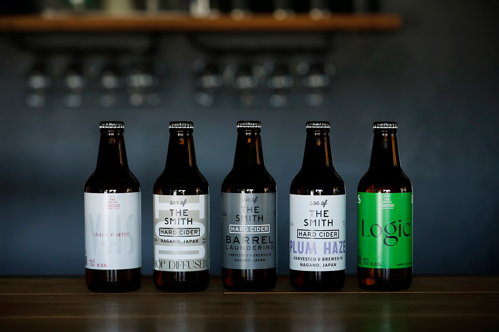
У каждого сайдера Son of the Smith своя тема. Идею, сырьё и способ производства команда подробно описывает на своём сайте, так что пить можно, заодно читая. Яблоки собирают с конца августа до конца ноября, сайдеры ставят до марта, бродят они два-три месяца, а новые выпуски выходят один за другим с поздней осени. Ниже пять сайдеров, которые продавались весной 2023 года. Цены ориентировочные, 2023 года.
Logic. Ответ на вопрос, куда девать нестандартные «Фудзи». Столовые яблоки сложного вина не дают, поэтому горечь и терпкость добавляет выдержанный хмель. Во вкусе фрукт и яркий цитрусовый аромат. Стиль: хоп-сайдер, 7,5%. Сырьё: «Фудзи» и другие столовые яблоки пополам, выдержанный хмель каскейд и другие. Цена: 1023 иены.
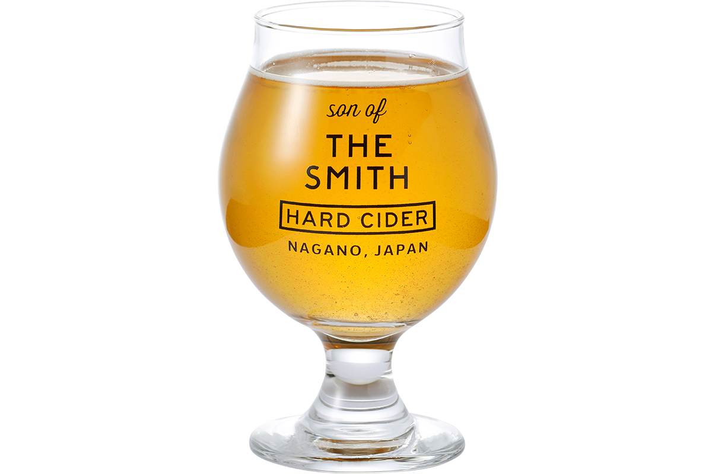
PLUM HAZE. Яблоки и сливы, которыми славится Синсю. При брожении слива даёт неприятный запах из-за железа, и его убирают винным способом, выдерживая сайдер на осадке. В сезоне 2023 года к столовым яблокам добавили сидровые и выдержанный хмель. Стиль: фруктовый сайдер, 7,5%. Сырьё: 75% столовых и 25% сидровых яблок, сливы сортов «Робе де сержан», «Курасима» и «Сан прун», выдержанный хмель. Цена: 1023 иены.
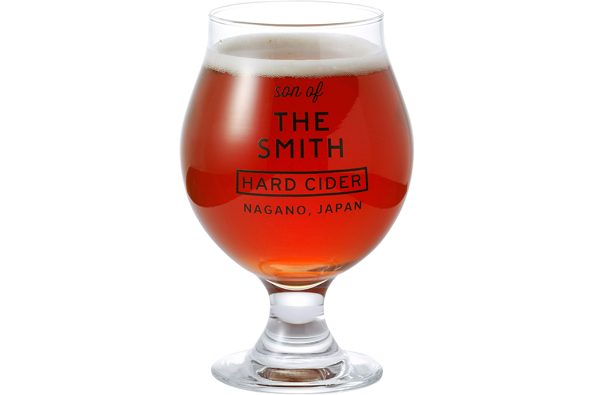
BARREL LAUNDERING. Сайдер из английских сидровых сортов, выдержанный в деревянной бочке, новая версия сайдера, получившего серебро International Cider Awards в 2021 году. В версии 2023 года основное брожение шло на диких дрожжах. За сладостью и кислинкой идут аромат бочки и многослойная терпкость. Стиль: выдержанный в бочке сайдер из старинных сортов, 7%. Сырьё: восемь традиционных английских сидровых сортов, выдержанный хмель и другое. Цена: 1430 иен.
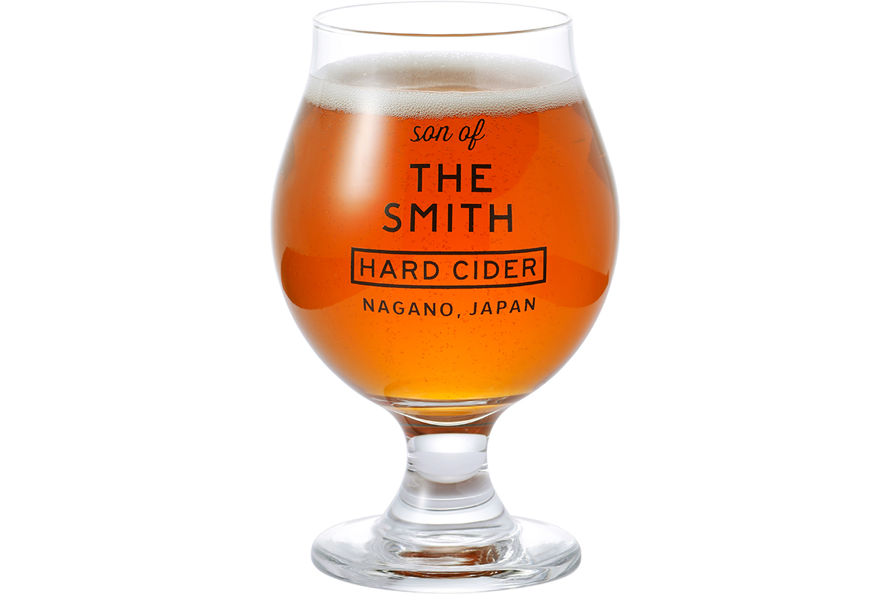
HOP DIFFUSER. Первый в Японии сайдер по французскому методу кивинга: дрожжи оставляют и сбраживают медленно, чтобы сохранить природную сладость. Сладость и кислота фруктов бьют ключом, а горечь хмеля и сидровых сортов оставляет сложное послевкусие. Стиль: хоп-сайдер по методу кивинга, 6%. Сырьё: яблоки «Асама кучина», «Когёку», «долго» и «Синано лип», выдержанный хмель. Цена: 935 иен.
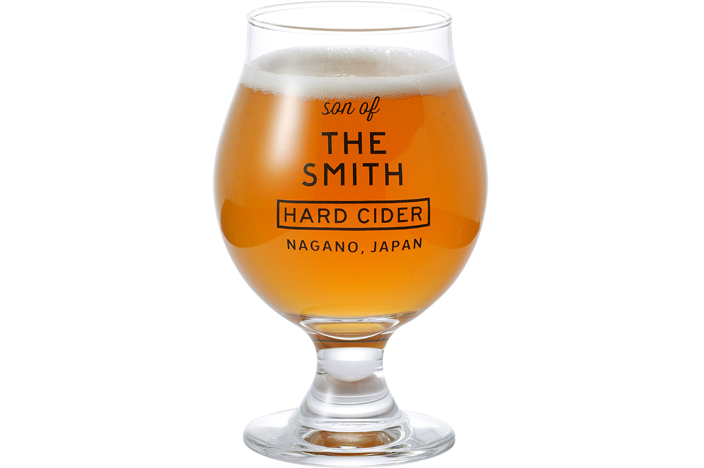
VIVID HOP SIPPER. Дань уважения знаменитому сайдеру орегонской сидродельни Reverend Nat's, с большим количеством хмеля. Столовых яблок много, поэтому цвет светлый, аромат свежий, как у грейпфрута, и пьётся легко. Стиль: хоп-сайдер, 7%. Сырьё: яблоки «Асама кучина», «Когёку», «Синано свит» и сидровые сорта, свежий хмель каскейд и другие. Цена: 1023 иены.
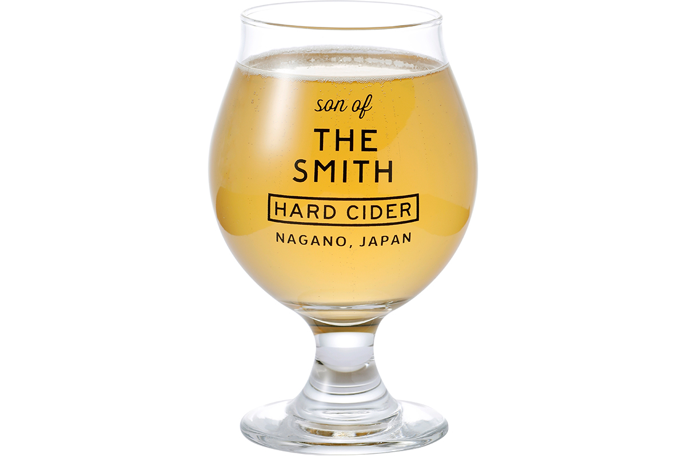
Где попробовать
Таплум в Омати
При сидродельне есть таплум. Индустриальный интерьер Кота Одзава сделал своими руками, есть даже место для диджея. В 2023 году таплум работал в основном по выходным и под частные мероприятия по заказу, и команда собиралась проводить открытые вечера. Посетить сидродельню и таплум можно только по предварительной записи.
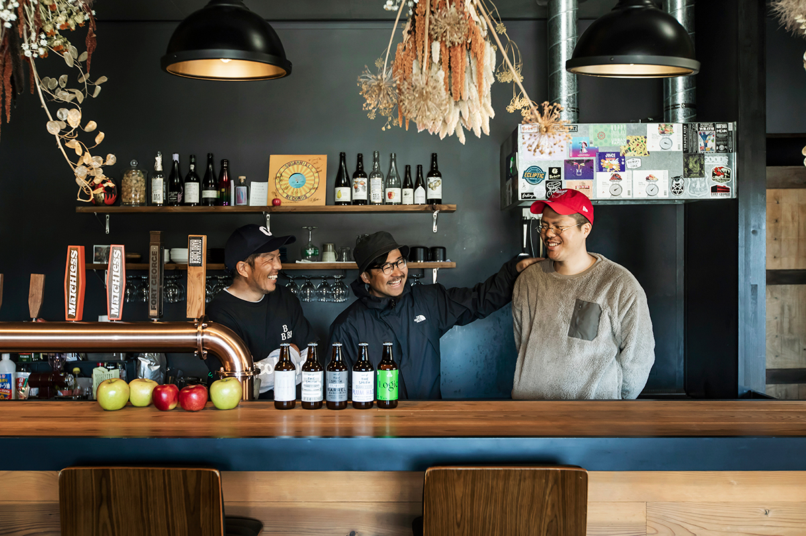
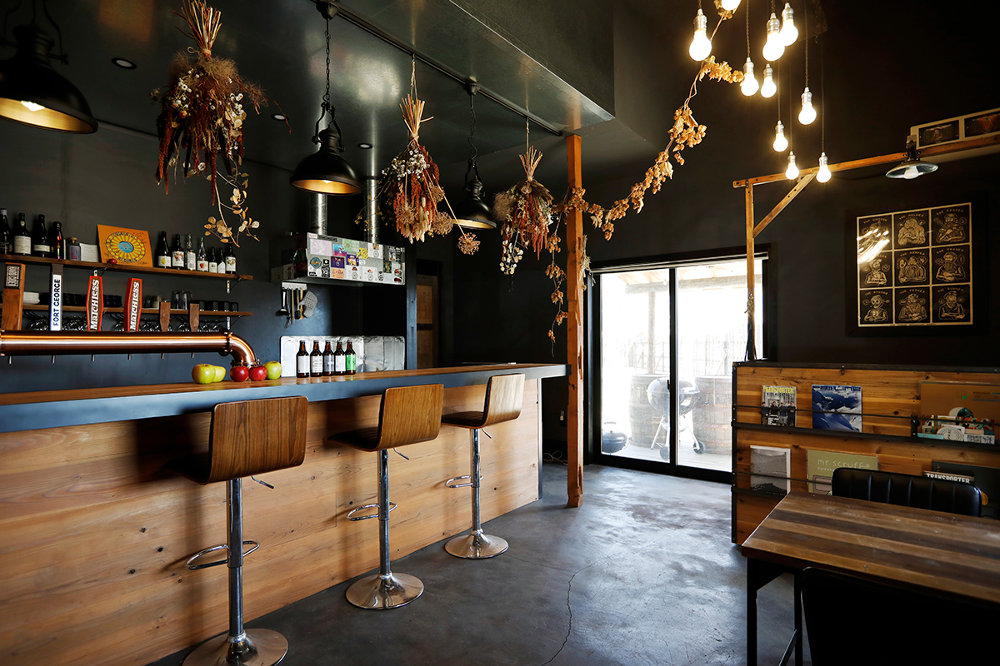
В префектуре Нагано Son of the Smith в 2023 году наливали, например, в The Source Diner в Мацумото и в «Аппумото» в Уэде.
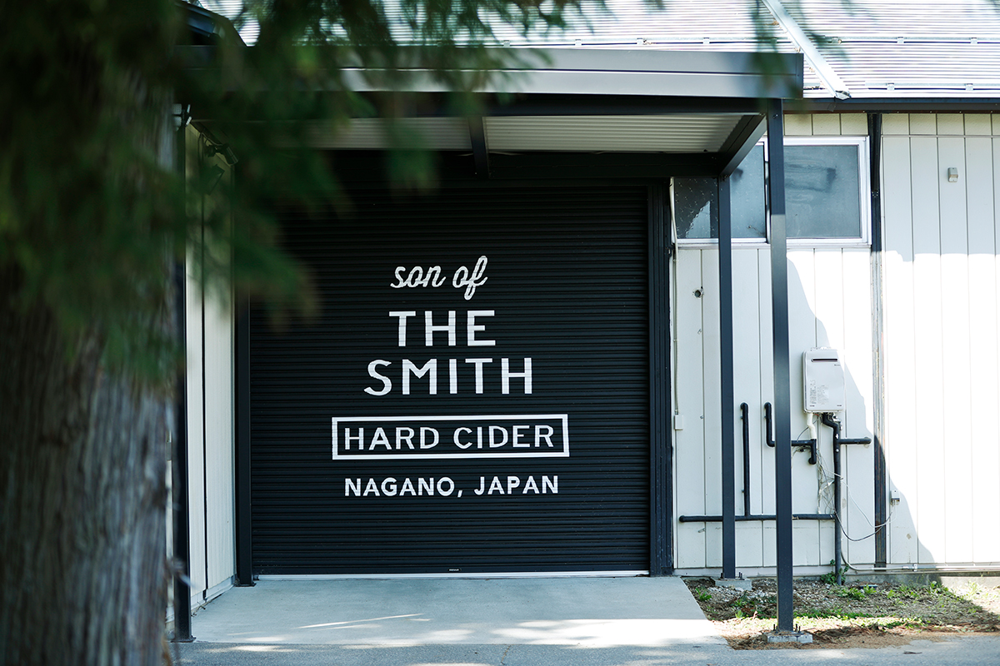
Son of the Smith
- Адрес
- префектура Нагано, Омати, Тайра, 9316
- Телефон
- +81 261-85-5023
- Цены / Вход
- посещение сидродельни и таплума только по предварительной записи
- Сайт
- hardcider.jp
Фото: Юко Тиба.